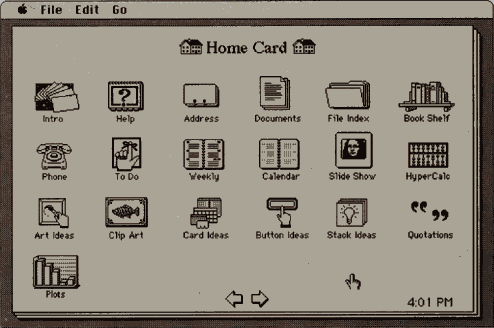

Your browser doesn't support the features required by impress.js, so you are presented with a simplified
version of this presentation.
For the best experience please use the latest Chrome, Safari or Firefox browser.
"It's kind of fun to do the impossible"
Walt Disney.
Have we met yet?
I'm, Fatih. Karatana.
Sr.Software Engineer & Software Architect @
Independent Contractor & Business Coach
twitter.com/fatihzkaratana
https://github.com/uphAcLic
https://plus.google.com/+FatihKaratana
http://fatih.karatana.com
Previously on my Life
Sr.Software Engineer @
Sr.Software Engineer & PM @ High Level Software
Sr.Software Engineer & PM @ Outsource Software
Software Engineer & GM @
Studied Bsc of CEng @
Go through?
First, History of Web
Then, History of Mobile
After, What can you do with Web for Mobile?
Conclusion, Is it "How" now?
End, Any question?
Mobile applications with
HTML + Javascript + CSS*
History of Web
It was a dust cloud at t0
Then, The Mundaneum founded by Paul Otlet and Henri La Fontaine was thought to
gather together all the world's knowledge
and
classify
and it according to a system they developed called
the Universal Decimal Classification
it was just a beginning HyperCard,
SGML and Nexus
have been created after years
HyperCard
first successful hypermedia systems before the World Wide Web

SGML
an ISO-standard technology for defining generalized markup languages
Nexus
WorldWideWeb(Nexus) was the first web browser
Recently We have
HTML(5), CSS, Javascript and more...
There are thousands of...
CSS frameworks, Javascript libraries, even they are MVC or MMVM, dude!
So, what about the Mobile?
Mobile is the future, isn't it?
Mobile world has a serious history
It has a past back to earliest of the 90s
Of course it was not even closer to the devices that we had now
Where is the App store? No App? C'mon!
This much history is enough, right!
It is NOW then!
Mobile development has its own challenges
Such as: different resolution, different version, different hardware, damn right!
If you go through with Mobile Web, it is already Web
Do not be afraid of different resolution, different version, different hardware, damn right!
List of most popular Mobile Web Frameworks
- Ionic
- Sencha Touch
- Corona
- Dojo Mobile
- React
We have to design an architect to run our App
- Define your models based on ERD or Database design
- Mockups, wireframes. Do not ignore UI/UX!
- Develop your service layer, mostly REST, while building your App
- Pick a framework to start to build your App, I suggest Ionic or Sencha Touch
- Build your app then package it with a package manager such as Cordova
- Get an enrollment then put your App into the Store!
Ionic, a serious, powerful and fresh framework!
- an HTML5 mobile app development framework targeted at building hybrid mobile apps
- built on top of the popular AngularJS framework from Google
- uses Angular’s touch recognizers, view animation logic, HTML sanitation, and asynchronous communication.
- install their Node.js-based CLI through NPM
- developers can use MVC or MVVM per their liking
- class system, DOM control, UI and theming
- widgets, Responsive Design and Desktop support
- and more...
Quick start to Ionic? Yeap, move on!
Install Ionic
$ npm install -g cordova ionic
Start Ionic App
$ ionic start CiuDemo tabs/blank/sidemenu
See it in action...
Question(s)?
No? Thank God :)
Thank you!
Special thanks to: